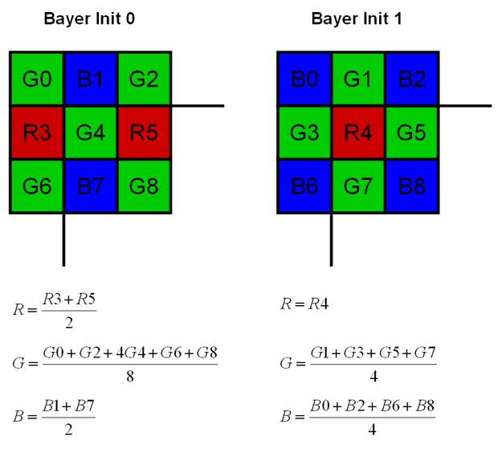
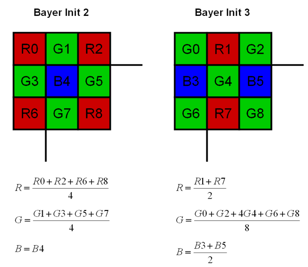

Bilinear Demosaicing Algorithm for Bayer Filters
Algorithm Description
Description
A Bayer filter camera uses a color filter array attached to a monochomatic sensor (see Bayer Filter). The bilinear demosaicing algorithm performs the color reconstruction according to the Figures shown below. The calculations are perfomed with up to 12bit/pixel. Therefore, the bits per pixels selected as Input Format are rounded to 12bits/pixel, the internal applet accuracy.

References
| Forward |